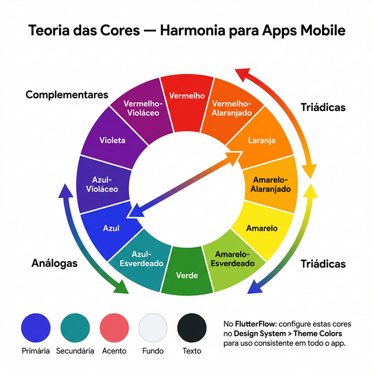
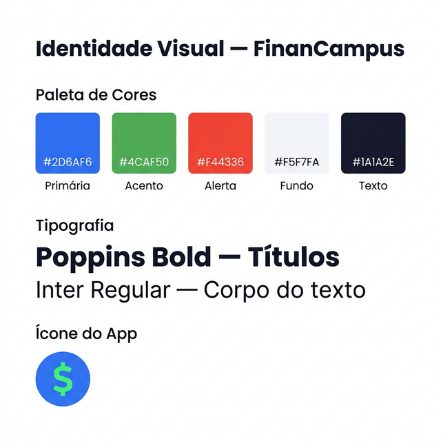

SEMANA 8 – Identidade Visual e Multimídia
Nesta semana, você irá construir a identidade visual do seu aplicativo: definindo a paleta de cores, tipografia, logotipo, ícone do app e splash screen.
A identidade visual é o que dá personalidade ao seu app. Ela comunica os valores do produto antes mesmo de o usuário interagir com qualquer funcionalidade. Um design consistente e profissional aumenta a credibilidade e a confiança do usuário.
Fonte: Google Research; Tractinsky, N. – Aesthetics and Apparent Usability. |
8.1 Teoria das Cores
A escolha das cores do app deve ser intencional e coerente com o propósito do produto e o perfil do público-alvo. Cores comunicam emoções e valores.
| Cor | Emoções/Valores | Apps que usam |
|---|---|---|
| Azul | Confiança, segurança, tecnologia | Facebook, Twitter/X, Nubank (roxo-azulado) |
| Verde | Saúde, natureza, prosperidade | WhatsApp, Nubank (verde), Duolingo |
| Vermelho / Laranja | Energia, urgência, paixão | YouTube, iFood, Tinder |
| Amarelo | Alegria, criatividade, atenção | Snapchat, McDonald's |
| Preto / Cinza | Sofisticação, modernidade, premium | Spotify (fundo escuro), Apple Music |
| Roxo | Criatividade, inovação, luxo | Twitch, Nubank |
Paleta de Cores e Acessibilidade (Contraste)
Defina uma paleta funcional para seu app com as seguintes composições principais:
- Cor primária: a cor principal, aplicada aos pontos de mais atenção (ex.: botões de ação primária).
- Cor secundária: cor de apoio para diversificar a interface sem poluir a visão.
- Fundos e Superfícies: bases neutras (branco, cinzas ou tema escuro).
- Identidade e Contraste: garanta que os textos aplicados sobre as cores do fundo tenham contraste e legibilidade impecáveis. O que é bonito mas difícil de ler frustra e afasta o usuário (taxa de contraste sugerida para acessibilidade é de no mínimo 4.5:1).
Harmonia Cromática — Escolhendo Cores que Funcionam Juntas
Não basta escolher uma cor bonita — é preciso garantir que elas funcionem em conjunto. A teoria das cores define esquemas de harmonia que guiam essa escolha. O mais simples é o esquema análogo (cores vizinhas na roda), que gera uma sensação de unidade. O esquema complementar (cores opostas) gera contraste e é ideal para destacar botões de ação. Já o esquema triádico (três cores equidistantes) é mais ousado e vibrante.
A Figura 8.1 ilustra a roda de cores com os três principais esquemas de harmonia e como eles se traduzem em paletas práticas para apps mobile, incluindo os 5 slots de cores que devem ser configurados no Design System → Theme Colors do FlutterFlow.

8.2 Tipografia
A tipografia define as fontes usadas no app. Uma boa escolha tipográfica melhora a legibilidade e reforça a personalidade da marca.
|
Use fontes do Google Fonts (fonts.google.com) — são gratuitas e disponíveis no FlutterFlow. As mais usadas em apps mobile são: Roboto (padrão Android), Inter, Nunito e Poppins. Use no máximo 2 fontes diferentes no app. |
| Elemento | Tamanho | Peso |
|---|---|---|
| Título da tela (H1) | 24–28 sp | Bold (700) |
| Subtítulo (H2) | 18–20 sp | SemiBold (600) |
| Corpo do texto | 14–16 sp | Regular (400) |
| Rótulos de campos | 12–14 sp | Medium (500) |
| Texto auxiliar / dica | 12 sp | Regular (400) |
8.3 Logotipo, Ícone e Splash Screen
Logotipo
O logotipo do app combina um símbolo gráfico (ícone) com o nome do app em tipografia escolhida. Deve ser simples o suficiente para funcionar em tamanhos pequenos.
Você pode utilizar o Gemini (gemini.google.com) para gerar uma proposta inicial de logotipo com inteligência artificial. Descreva com detalhes o estilo visual, as cores e os elementos que deseja. Veja um exemplo:
Crie um logotipo para um aplicativo mobile chamado "FinanCampus". O app é voltado para estudantes universitários que querem controlar suas transações financeiras de forma simples e visual. Estilo: moderno, minimalista, tech. Cores: azul (#2D6AF6) como cor principal, com detalhes em verde (#4CAF50). Símbolo: um cifrão (R$) estilizado ou uma carteira digital, dentro de um círculo com fundo azul. Tipografia: nome "FinanCampus" ao lado do símbolo, em fonte sem serifa, bold, cor azul escuro. Fundo: branco ou transparente. Formato: quadrado, proporção 1:1, resolução 512×512 pixels.
Ícone do App
O ícone é exibido na tela inicial do celular e na Play Store. Os requisitos técnicos para publicação na Google Play são:
Para gerar o ícone com IA, use um prompt focado em um símbolo único e reconhecível, sem texto — pois o ícone precisa ser legível em tamanhos muito pequenos (48×48 px na tela do celular). Exemplo:
Crie um ícone para um aplicativo mobile de controle financeiro chamado "FinanCampus". O ícone deve ser simples, reconhecível e funcionar bem em tamanhos pequenos (48px a 512px). Estilo: flat design, minimalista, sem texto. Símbolo: um cifrão (R$) estilizado ou uma carteira moderna, centralizado. Fundo: círculo ou quadrado arredondado com fundo azul (#2D6AF6). Símbolo: branco ou verde-claro (#4CAF50) sobre o fundo azul. Resolução: 512×512 pixels, formato PNG com fundo sólido (sem transparência) para uso na Play Store.
|
Se o primeiro resultado do Gemini não agradar, refine o prompt: ajuste as cores, peça "mais simples", "mais arredondado", "sem sombra" etc. Você também pode pedir ao Gemini que gere 4 variações do mesmo conceito para escolher a que melhor representa o seu app. |
| Especificação | Valor |
|---|---|
| Formato | PNG (com transparência) ou JPG |
| Tamanho (Store) | 512 × 512 pixels |
| Tamanho máximo | 1024 KB |
| Forma | Quadrado (a Play Store aplica cantos arredondados) |
| Fundo | Sem transparência para a versão da Store |
Splash Screen
A splash screen é a tela exibida brevemente enquanto o app é carregado. No FlutterFlow, configure-a em Theme → Launch Screen. Deve conter apenas o logotipo (ou ícone) e a cor de fundo da marca — nada mais.
|
Evite usar imagens de direitos autorais (fotos de bancos pagos, logos de outras marcas) no seu projeto. Use recursos gratuitos como Unsplash, Pexels, Flaticon e Google Fonts. Sempre verifique a licença de uso antes de incluir qualquer ativo externo. |
8.4 Aplicando a Identidade Visual no FlutterFlow
No FlutterFlow, acesse Theme Settings para definir as cores e fontes que serão aplicadas consistentemente em todo o projeto. A estrutura de temas inclui:
- Primary Color: cor principal do app.
- Secondary Color: cor de destaque secundário.
- Background Color: cor de fundo das telas.
- Primary Font / Secondary Font: fontes utilizadas para títulos e texto.

8.5 Entregável da Semana
|
|
Use o prompt abaixo como ponto de partida para usar a IA como seu par nesta semana: "Atuando como um Designer visual, sugira 3 combinações distintas de paleta de cores (cor Primária, Secundária e de Fundo) e uma fonte ideal para um aplicativo de [descreva o nicho, ex: saúde, finanças]. O app quer transmitir [ex: confiança e modernidade]. Informe os códigos HEX para cada cor." |
Na próxima semana, você irá ativar as regras de segurança (Security Rules) no banco de dados Firebase, garantindo que cada usuário acesse apenas seus próprios dados.
8.6 Estudo de Caso: FinanCampus
Veja as decisões de identidade visual que o grupo do FinanCampus tomou nesta semana. A Figura 8.3 apresenta o brand board completo com paleta de cores, tipografia e ícone do app.

|
Paleta de cores:
Tipografia: Poppins para títulos (Bold 700) e Inter para corpo do texto (Regular 400). Ambas do Google Fonts, disponíveis nativamente no FlutterFlow. Logotipo: símbolo de cifrão estilizado dentro de um círculo azul, com o nome "FinanCampus" ao lado em Poppins Bold. Criado no Canva e exportado em PNG 512×512px. Splash screen: fundo #2D6AF6 com o logotipo centralizado em branco. Configurado em Theme → Launch Screen no FlutterFlow. |